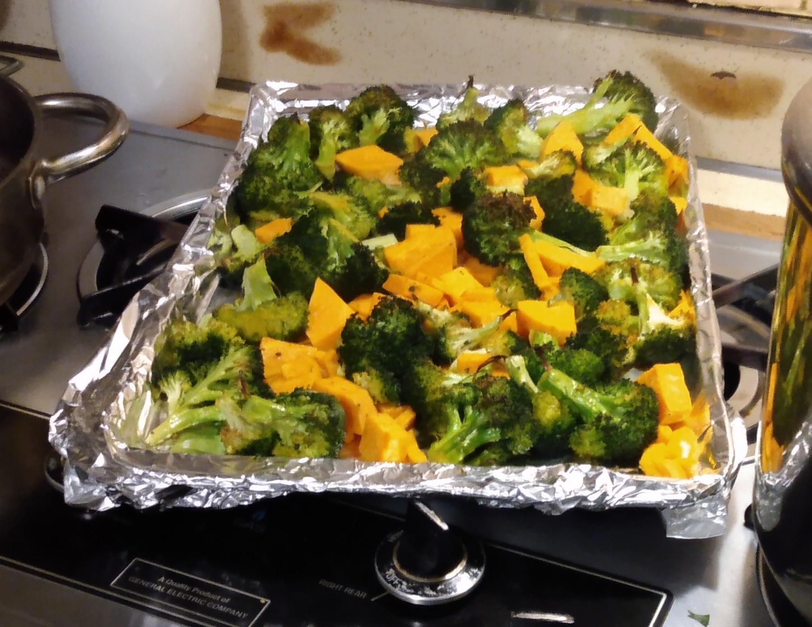

Broccoli and Sweet Potato Roast

Description
A good vegetable roast for a cold day consisting of healthy vegetables and very little ingredients. If you're short on time, this could provide a quick and delicious side to a main dish.
Having a good side dish is important to know if you're entertaining your friends. Depending on where you live, you won't spend more than $5 dollars, provided you already have olive oil and basic seasonings.
Ingredients
- 1 sweet potato
- 2 medium crowns
- 3 tbsp Olive Oil
- salt, pepper and smoked paprika
- lemon (optional)
Directions
- Preheat oven to 400 degrees fahrenheit
- Cut broccoli into florets and cut sweet potato into bite-sized chunks.
- Put broccoli and sweet potato into a mixing bowl, add olive oil, salt, pepper and smoked paprika. Mix until vegetables are coated with oil. You may have to add a little bit more.
- Prepare baking sheet by wrapping it with aluminum foil, lay out vegetables. Make sure there is a little space between them. Use another sheet if needed.
- Place in oven. After 10 min, take out the sheet, and flip the vegetables with a spatula. Keep roasting for another 10-15 minutes, or until sweet potato is lightly browned.
- Once finished, take out and let rest for 5 minutes. Squirt lemon juice ontop of the vegetables.
Bon apetit